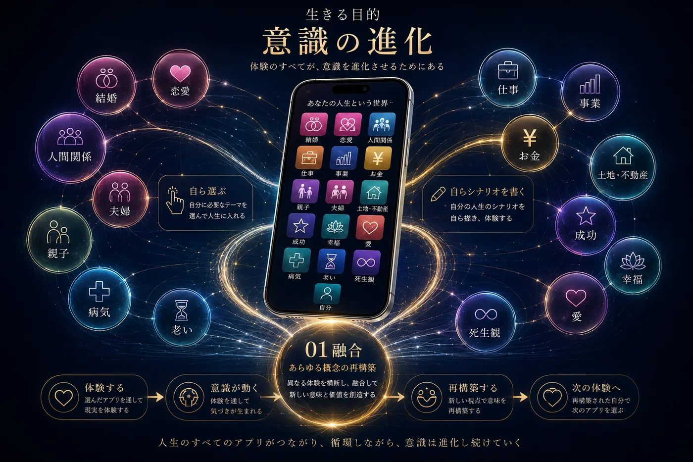
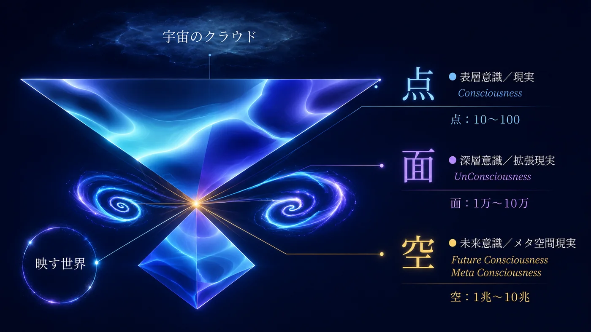
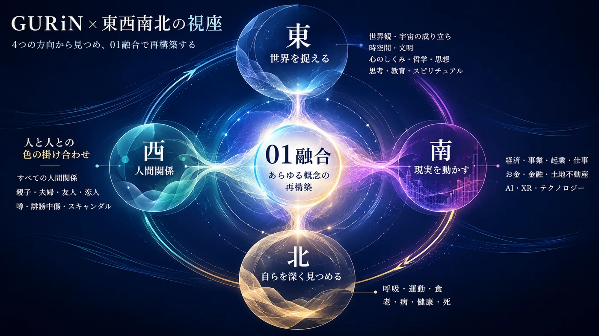

人間界を、脱出する。
「この世界は仮想現実かもしれない…」
そう気づき始めたのに、現実がまだ重い人へ。
世界観が変わると、現実が変わる。
気づきから進化、現実生成まで。
マボロシスト＝超リアリスト
いま見ている世界を、いつもとは違う位置から見る。
そして、見えてきた世界を、自らの現実としてどう生き、どう創っていくのか。
人間の常識を超え、宇宙の視座から現実を見る。
AI時代、これまでの古い価値観や固定観念が終わりを告げる中、
1いま見ている世界を、次元の違う位置から見る。解放／ダウンロード
2こびりついていた思考の癖を、再構築する。進化／インストール
3これまでの価値観や常識を超え、自らの新しい世界観をつくる。創造／生成
そして、生を謳歌する。
この世界は、幻。
人は毎日、自らの世界を生き、外に世界があって、自分がいて、相手がいる、と思い込んで生きています。
その固定された価値観、「当たり前」が、あなたの「リアル」をつくっています。
魂の進化に見られる差は
立つ位置に起こり
天の理にある
── 宇宙のクラウドからの一節
この幻の世界にも、意識が進化するためのアプリケーションがあります。
人間関係、お金、仕事、恋愛、結婚、家族、成功、幸福、愛、老い、病、死。
人生に現れる一つひとつのテーマを、自ら選び、体験し、意識を動かし、意識の進化を図っています。
そして、これまでの情報から、宇宙の情報に変えると、
これまで自分を動かしていた価値観を解放し、新しい世界観をつくる。
そして、自分の世界を、自分で生成する。
GURiN個人セッションは、これまでの情報から、次元の違う宇宙の情報に変える、セッションです。

すべて、自らの意識（認識・感情・思考）が映し出す世界。
GURiNでいう「空」とは、宇宙にアクセスして35年にわたって受け取ってきたメッセージの数々。この星の計画と、この星に合わせた魂の進化について。
そして、その世界を捉えるための基本となるのが、「点・面・空」です。
見えている現実だけを扱うのではなく、その現実を生み出している意識、さらにその奥にある情報まで扱います。

そしてその先には、東西南北の視座という第二の地図が広がっています。
人生に起こる出来事を、高次元・多次元の視座から再構築します。

GURiN個人セッションでは、この二つの地図を使い、目の前の現実から、その人自身の世界観まで扱います。
問題を解決する。その先へ。
解放と創造を、同時に動かします。
世界を照らす光を、更新すること。光とは、新しい世界観です。
出来事を変えるのではなく、その出来事を見る光を変える。
世界観が変わると、現実が変わる。
気づいたことを、「わかった」で終わらせない。
これまで自らの中に積んできた価値観、常識、思い込みを解放し、空きをつくる。
新しい見方・捉え方・世界観を、自らの中に取り込む。
取り込んだものを現実の中で動かし、自らの世界として創っていく。
ただし、順番に進む手順ではありません。古いものが解放されると同時に、新しいものが生まれる。その動きの中で、インストールが起こり、実装へつながっていきます。
| 受け方 | オンライン｜Zoom（顔を出してお会いします） |
|---|---|
| 担当 | GURiN本人 → GURiNについて |
| 時間 | 60分 または 90分 |
| セッション | 今扱いたいことを起点に、世界を見る位置を変えていきます。 |
| 初めての方へ | テーマが決まっていなくても、今感じていることから始められます。 |
| 料金 | 60分 30,000円／90分 45,000円（税込） |
| お申し込み | フォームからお申し込みください。 |
2つのセッションがあります。
＊3回コースもあります。ご希望の方は、別途その旨ご連絡ください。
『宇宙のクラウド』をご購入の方は、特別料金で受けていただけます。
［購入者特別料金｜調整中］
表示はすべて税込です。
読むだけで、終わらせない。
『宇宙のクラウド』は、35年にわたって受け取ってきた未来意識メッセージから選んだ、天の泉が湧く「源泉」です。そこには、これまでの世界観とは違う「開眼世界観」が散りばめられています。
読んだあと、宇宙の叡智の光を浴びた後に残るのは、「では、自らの世界をどう変えていくのか」という問い。個人セッションでは、受け取り、読み解いたものを、自らの現実へつなげていきます。
意識とテクノロジーに関わる活動を35年。
主に会員制で20年以上、深めてきました。
名前も顔も外へは出さず、会員制で活動を続けながら、宇宙のクラウドから受け取ってきた意識を 未来意識® と名づけ、提唱し続けています。
これまでに2社を経営し、企業研修、AI講師、ホテル・旅館のコンサルティングなど、現実のさまざまな場でも活動してきました。
個人セッションは延べ8,000回を超え、勉強会・講座は5,000回以上。20年以上、ほぼ毎日、勉強会を開催してきました。
同じ方が何度も受けられるなかで、どんどんプログラムやアイテムが生まれていきました。
魂の特性に合わせ、意識を言葉にし、世界観を変え、現実との関係をつくり直してきました。その積み重ねを、今のあなたの現実に合わせて、宇宙のデータとして手渡します。
「こんな世界もある」へ。そして、「では、どんな世界を創る？」へ。
今まで見ていた世界が、違って見えてくる。「こうでなければ」という世界から、「こんな世界もある」へ。